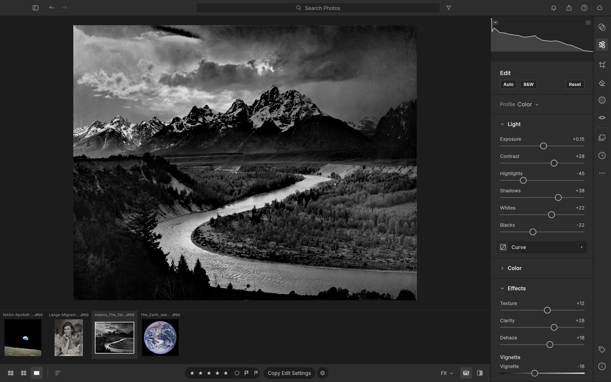

LightCraft
A free photo library and RAW editor that works like Lightroom - organize, develop and export, all on your own machine.
Import your photo library, develop RAW files with sliders you already know (exposure, contrast, highlights, shadows), and export finished JPEGs - without a Lightroom subscription.

How does it work?
You shoot in RAW and need a tool to organize, develop and export your photos - but Lightroom costs $10 a month and locks your library in Adobe's cloud.
You come back from a trip with 400 RAW files and need to cull, rate, adjust and export the keepers.
You open LightCraft and import a folder of photos, or point an AI agent at it through its command interface.
Import a folder of Canon CR2 or Sony ARW files - the RAW decoder handles DNG, Canon, Sony, Nikon, Fujifilm, Panasonic, Pentax and Olympus.
Your RAW files, JPEGs, TIFFs or DNGs - the same files your camera saves.
A folder of 200 Sony ARW files from a weekend shoot.
It builds a library you can browse, rate and filter, and develops each RAW file with non-destructive adjustments.
- Browse your library with albums, star ratings, flags and color labels - filter to find the shots you want
- Develop each photo with sliders for exposure, contrast, highlights, shadows, white balance and tone curves in a 32-bit float pipeline
- Apply masks (brush, gradient, luminance range) with up to 15 local adjustments per mask
- Export finished files as JPEG, TIFF or PNG, with watermarks and contact sheets
The README claims a 24-megapixel RAW file updates in about 4 milliseconds per slider move on the GPU pipeline.
A managed photo library with developed, exported images - all stored locally.
- Developed photosFinished JPEGs or TIFFs, exported with your adjustments baked in
- An organized libraryAlbums, ratings and flags across your whole collection, searchable and browsable
- 18 built-in presetsOne-click looks you can apply and adjust - copy settings across a whole batch
What changes for me?
Without it
- Developing RAW files means paying Adobe $10 a month for Lightroom - or learning darktable, which works differently.
- Your photo library lives in Adobe's cloud, tied to a subscription. Cancel and you lose the edits.
With it
- The same slider-based RAW workflow, on your own computer, for free - with presets, batch editing and a local library.
- Your library and every edit stays on your machine. No account, no cloud, no subscription.
How hard is it to try?
Effort
- Download LightCraft for your computer (Mac, Windows or Linux) and install it.
- Import a folder of photos (RAW files if you have them, or JPEGs). Rate a few with star ratings, then double-click one to enter the develop view.
- Try the develop sliders: drag Exposure, Contrast and Highlights. Apply one of the 18 built-in presets. Export a finished JPEG.
What it takes on your computer
- Space on disk
- No data found for installer size. Builds from source with
cargo run --release -p lightcraft(requires Rust 1.90+). - Memory while it runs
- No data found. Uses a GPU pipeline (Metal, Vulkan or DX12) and falls back to CPU without a GPU.
- Runs on
- Mac (universal), Windows (x64, arm64, x86), Linux (x86_64, aarch64), FreeBSD and the web (via WebAssembly).
Paste this into Claude Code. It runs your safety scan first, then a 10-minute test.
/skillspector https://github.com/storytold/lightcraft If that scan passes: download and install LightCraft, import a folder of sample photos, try the develop sliders and export a JPEG. 10 minutes max.
Should I?
Great if you...
- You shoot in RAW and want a free tool with Lightroom's slider-based workflow - exposure, contrast, highlights, shadows, presets
- You want your photo library on your own computer with no cloud dependency
Skip it if...
- You need full RAW camera support today - the decoder covers major brands but is about 55% complete, with some camera models unsupported
- You depend on Lightroom's AI features (AI denoise, AI masks, subject detection) - those are at about 15% in LightCraft
Instead, you could look at
- darktableThe established free RAW developer. Far more mature and complete, but a very different interface from Lightroom.
- RawTherapeeA powerful free RAW processor focused on development. No library management, but deep editing controls.
Is it safe?
- Security advisories: 0GitHub's advisory list, checked Oct 10
- Searches for CVEs, vulnerabilities, malware and scams2 results read, including the national CVE database: nothing found
- Are the stars earned?8.1K stars, 59 contributors, 1.5K commits. findarepo: looks organic
Watch out for
- RAW support is about 55% complete. Major brands (Canon, Sony, Nikon, Fujifilm) work, but some camera models and RAW variants are unsupported or partial.
- Part of the ArtCraft suite by storytold. Same maker as PhotoCraft, FilmCraft, PdfCraft and ArtCraft. All are early alpha, built by one developer with AI. Long-term maintenance depends on one person.
- Cannot import Lightroom catalogs. If you have years of edits in Lightroom, there is no clean migration path yet.
- AI and computational features are thin. AI masks, AI denoise and computational photography are at about 15% by the project's own estimate.
Who's using it, and for what?
LightCraft is 9 days old and in development. Named real-world use is still very early.
We couldn't find anyone describing real use of it yet. That's normal for a brand-new repo, and it's worth knowing.